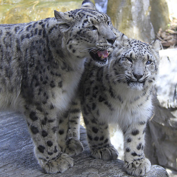

About Snow Leopards
What are Snow Leopards?
Snow Leopards are large cats native to the mountain ranges of Central and South Asia. They are well-adapted to living in cold, harsh environments and are known for their thick fur coats and long tails, which they use for balance. Snow Leopards are considered an endangered species due to habitat loss, poaching, and conflict with humans.
Characteristics of Snow Leopards
- Size: Snow Leopards are medium-sized cats, with a body length of 75-130 cm (30-50 in) and a tail length of 80-100 cm (31-39 in).
- Weight: Adult Snow Leopards weigh between 22-55 kg (49-121 lbs).
- Fur: Snow Leopards have a thick, woolly coat that helps insulate them in their cold habitat. Their fur is light gray or cream-colored, with black spots or rosettes.
- Diet: Snow Leopards are carnivores and primarily feed on wild sheep, goats, and other small mammals found in their habitat.
- Behavior: Snow Leopards are solitary animals and are known for their elusive nature. They are active mostly at dawn and dusk and spend their days resting in rocky crevices or caves.
- Conservation Status: Snow Leopards are listed as "vulnerable" on the IUCN Red List of Threatened Species due to habitat loss, poaching, and conflict with humans. It is estimated that there are only around 4,000-6,500 Snow Leopards left in the wild.
How You Can Help
There are several ways you can help protect Snow Leopards and their habitat:
- Support conservation organizations that work to protect Snow Leopards and their habitat.
- Reduce your carbon footprint to help combat climate change, which is a major threat to Snow Leopard habitat.
- Spread awareness about the importance of protecting Snow Leopards and their habitat.
- Avoid products made from wildlife and report any illegal wildlife trade you may come across.